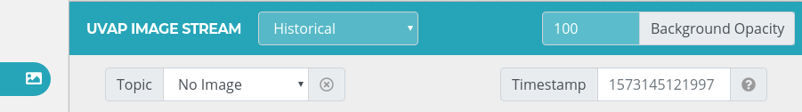

Stream Configurator UI Guide
The Stream Configurator UI makes the generation and management of passlines and detection filters quick and easy.
For information on setting up Stream Configurator UI, see Starting Stream Configurator UI.
Interface Elements

Main Screen of Stream Configurator
The Add New Elements button
( )
expands the drop-down menu.
)
expands the drop-down menu.
Detection Filter Area
( )
enters into Detection Filter Area mode for passline management. For
instructions, see Configuring Detection Filter Areas.
)
enters into Detection Filter Area mode for passline management. For
instructions, see Configuring Detection Filter Areas.
Passline () enters into Passline mode for passline management. For instructions, see Configuring Passlines.
Measure
( )
enters into the Measuring mode. Left click sets the starting point and displays the distance between the starting point and the cursor location. It also calculates the size and perimeter of the rectangle where the ruler is the diagonal.
)
enters into the Measuring mode. Left click sets the starting point and displays the distance between the starting point and the cursor location. It also calculates the size and perimeter of the rectangle where the ruler is the diagonal.
Measuring Mode
UVAP Image Stream button () brings up the UVAP Image Stream module for UVAP input topic management. For information, see UVAP Image Stream.
Interface Windows
Elements brings up the Elements window where all the objects are listed. These can be managed as described in Managing Existing Passlines or Managing Existing Detection Filter Areas.
Passlines and Detection Filter Areas can be moved in edit mode by dragging the dashed outline of the currently selected element
or by pressing the arrow keys.
Edit Mode
Source brings up the Source window which is used for importing and exporting passlines or detection filter areas. For further information, see Importing Passlines, Exporting Passlines, Importing Detection Filter Areas, and Exporting Detection Filter Areas.
Background brings up the Background window which can be used for uploading background images, adjusting opacity and managing gridlines. For further information, see Adding Background Image.
In a window, the pin button () locks the window to the right sidebar. To unlock it again, click on the unpin button ().
Note:
Only one window at a time can be locked to the right sidebar.
Additional Functions
The scroll wheel zooms in and out of the canvas.
Note:
To set reset the zoom to default (100%), click on the zoom value in the header.
Middle-mouse button + drag moves the canvas. To reset to the center of the canvas, click the Go to Origin button ().
Stream Configurator has the following keyboard shortcuts:
| Keyboard Shortcut | Function |
|---|---|
| Alt + B | Opens the Background window |
| Alt + E | Opens the Elements window |
| Alt + H | Opens the Help window |
| Alt + I | Opens the UVAP Image Stream toolbar |
| Alt + S | Opens the Source window |
| Alt + G | Toggles the grid visibility |
Adding Background Image
To add a background image:
Open the Background window.
Select Upload Image.
Select the image file to be uploaded.
Click Open.
Note
Removing or changing the uploaded image can be done through the Background window.
UVAP Image Stream
UVAP Image Stream is a built in module of Stream Configurator for displaying UVAP streams which makes passline configuration easier.
Prerequisites
Ensure that the following components are started:
See Prerequisites in Starting Stream Configurator UI for further information.
Description
Selecting the UVAP Image Stream button () on the left navigation bar brings up the UVAP Image Stream toolbar:
Note:
The Alt + I keyboard shortcut also brings up the UVAP Image Stream toolbar.
Where:
Topic is an user defined input
Note
Make sure that the selected topic is started correctly.
Existing topics may appear as suggestions when topic input box is clicked.
To close the toolbar, click the UVAP Image Stream button again or the close button.
Live Footage Display
UVAP image stream can be used to display a live image stream.
Refresh defines the update frequency of the stream:
Automatic: updates with every frame. The interval depends on the system.Manual: only updates on user command.Interval (100 ms): updates based on the user-set interval rate (for 100 ms).Every nth frame: updates based on the user-set frame rate.
Background Opacity defines the transparency level of the stream on a
0-100scale.
An icon next to the topic field indicates the status of the topic:
- indicates the topic is not available.
- indicates that the topic is loading.
- indicates that the topic is online.
Historical Image Display

UVAP Image Stream Window
UVAP image player can be used to display a single frame from an image stream.
Timestamp defines the timestamp of the frame to be displayed.
If there is no frame in the chosen topic with the requested timestamp, UVAP image stream behaves the following way:
- If the requested timestamp is smaller than the timestamp of the first frame in the stream, the first frame is displayed.
- If the requested timestamp is larger than the timestamp of the last frame in the stream, the last frame is displayed.
- Otherwise, the frame with the timestamp immediately after the specified timestamp is displayed (the frame with the closest timestamp that is bigger than the specified one).
An icon next to the topic field indicates the status of the topic:
- indicates the image is not available.
- indicates that the image is loading.
- indicates that the image is online.
Disable Background
Choose this option to remove video stream or uploaded image from background.
Managing Elements
For further information on managing passlines and detection filters, see Configuring Passlines and Configuring Detection Filter Areas respectively.
Troubleshooting
Closed Stream or Invalid Connection
Condition
An error indicator with the following message is displayed:
Selected stream is closed or connection invalid.
Invalid Stream
Cause
The connection is incorrect or the selected topic is invalid or not started correctly.
Solution
Check the connection and ensure that the topic is valid and started correctly.